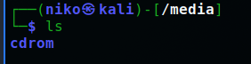

/
Tämä on hakemistorakenteen ensimmäinen kansio ns juurihakemisto (root). Muu hakemisto rakentuu tämän päälle.
/home/
Täältä näkee käyttäjien kotikansiot
/home/niko
Tämä on käyttäjän kotihakemisto. Tänne säilötään käyttäjän omat tiedostot, sekä käyttäjäkohtaiset asetustiedostot.
/etc/
Tästä kansiosta löytyy järjestelmän asetustiedostot. Esimerkiksi crontab, jossa voidaan luoda ajastettuja tehtäviä. Tiedostoon pääsee sisään komennolla crontab -e, jossa e = edit
Astuksia kirjoittaessa tulee jättää # merkki pois rivin alusta
/media/
Tietokoneeseen liitettyjen medialaitteiden tiedostot löytyvät täältä
/var/log
Täältä löytyvät järjestelmän loktiedostot. tail -5 [filename] näyttää viisi viimeistä merkintää